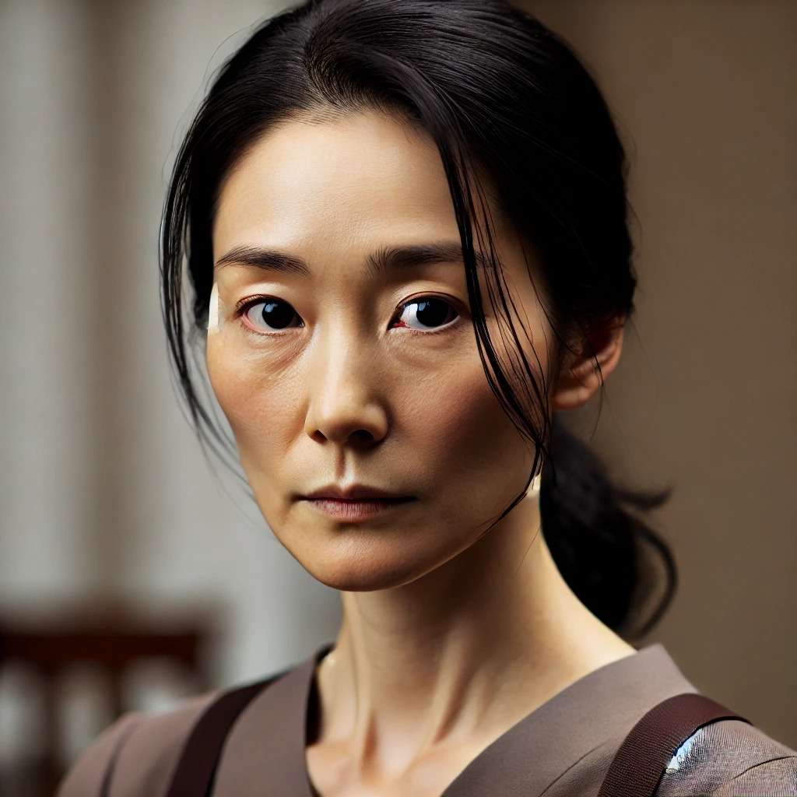
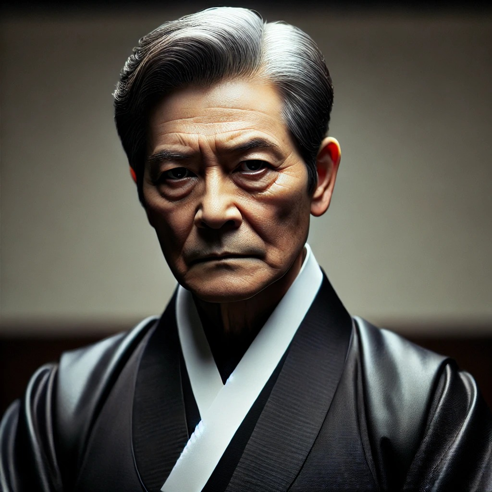
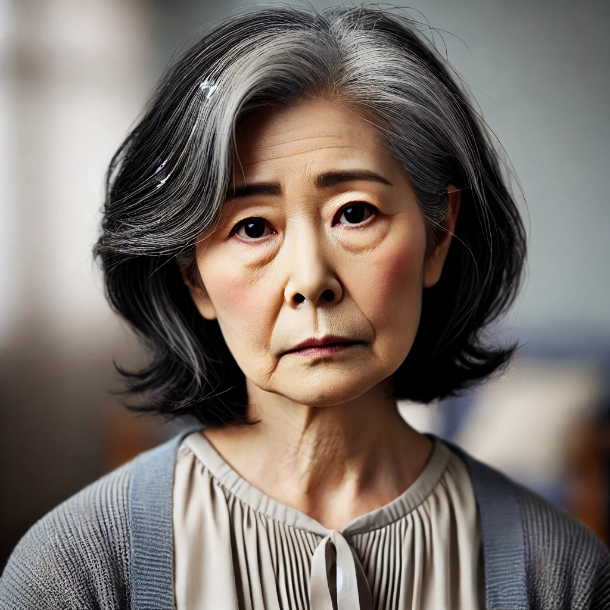
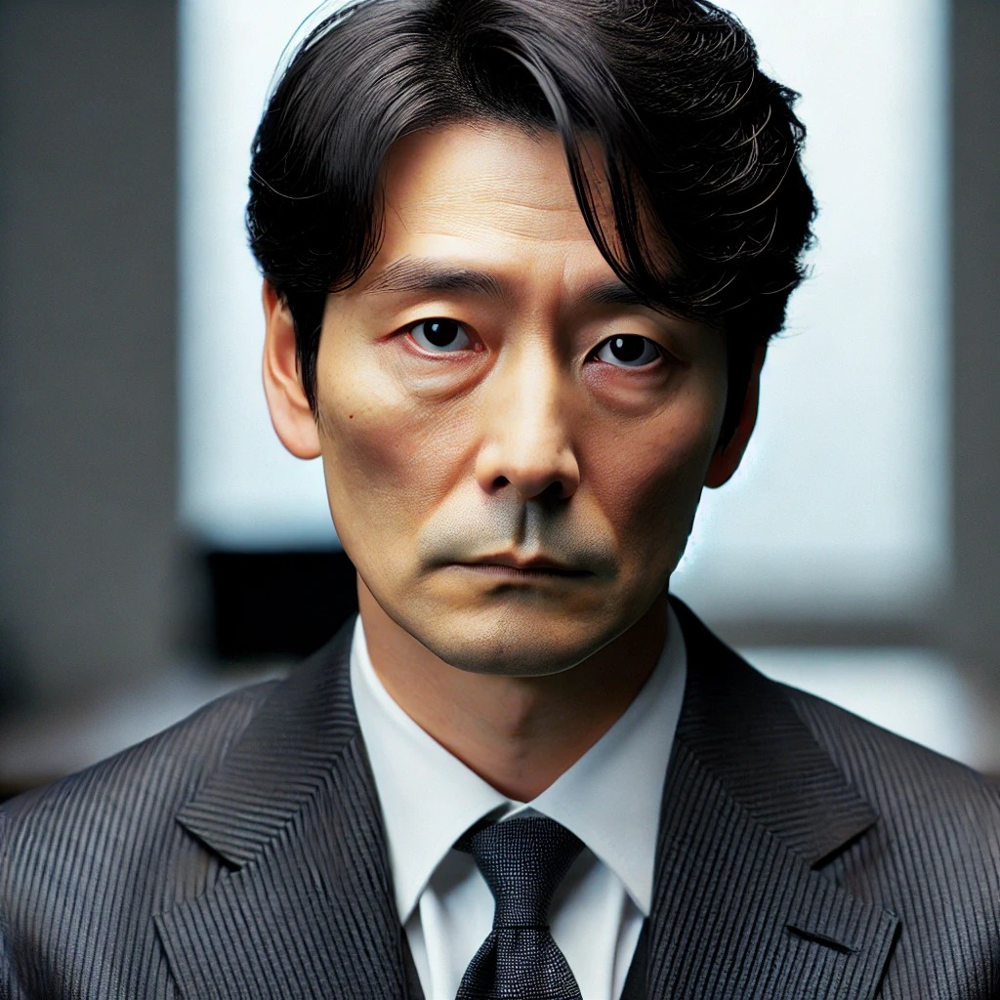
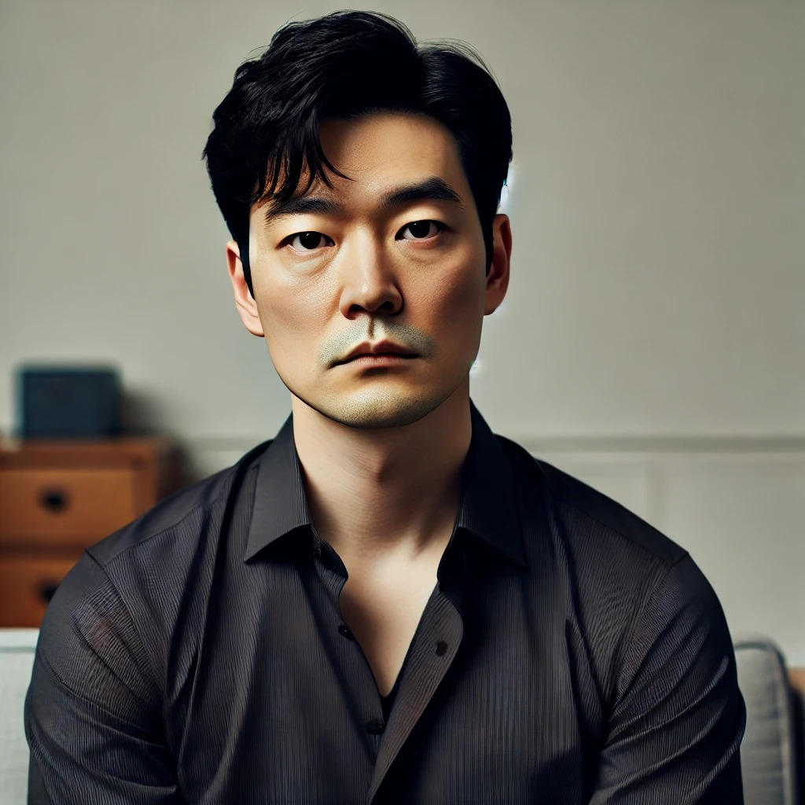
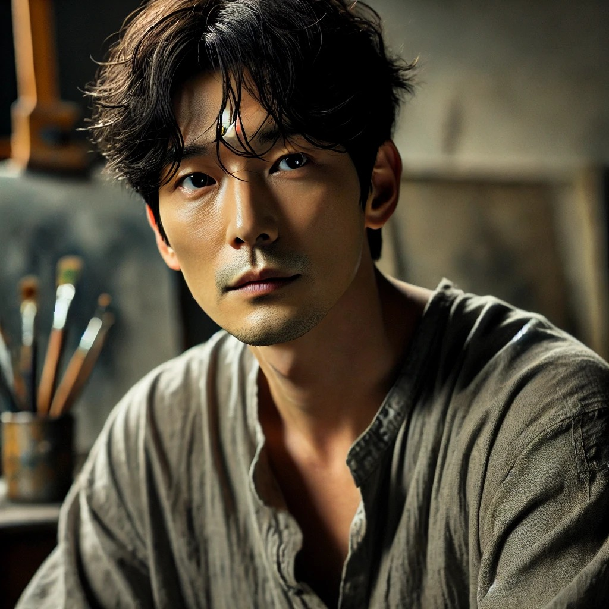

Autobiographie Han Kang
Han Kang wurde 1970 in Gwangju, Südkorea, geboren. Im Alter von neun Jahren zog sie mit ihrer Familie nach Seoul, wo sie an der Yonsei Universität koreanische Literatur studierte. Ihr literarisches Debüt gab sie 1993 mit ersten Gedichtveröffentlichungen, 1994 folgte ihr erster Roman. Neben ihrer schriftstellerischen Tätigkeit unterrichtete sie zehn Jahre lang Kreatives Schreiben am Seoul Institute of the Arts und lebt heute als freie Autorin in Seoul. Der internationale Durchbruch gelang ihr mit dem 2007 in Südkorea erschienenen Roman "Die Vegetarierin". Inspiriert wurde sie zu diesem Werk durch eine Kurzgeschichte mit dem Titel "Die Früchte meiner Frau", die sie 1997 schrieb. In dieser Geschichte verwandelt sich eine Frau in eine Blume, was Han Kang dazu veranlasste, das Thema in Romanform weiter zu erforschen. "Die Vegetarierin" erzählt die Geschichte einer Frau, die beschließt, kein Fleisch mehr zu essen, was zu Konflikten mit ihrer Familie und ihrem Umfeld führt. Das Werk wurde 2016 mit dem Man Booker International Prize ausgezeichnet und trug zu Han Kangs internationaler Anerkennung bei. Im Jahr 2024 erhielt Han Kang als Autorin den Literaturnobelpreis. Die Schwedische Akademie lobte ihre "intensive poetische Prosa, die sich mit historischen Traumata auseinandersetzt.
Charaktere
Yeong-hye

Yeong-hye ist die Protagonistin des Romans. Früher war sie eine unauffällige und gehorsame Ehefrau, doch nachdem sie aufgrund eines Albtraums beschliesst, kein Fleisch mehr zu essen, beginnt ihre Umwelt, sie als störend und krankhaft wahrzunehmen. Ihr Vegetarismus entwickelt sich zu einer radikalen Ablehnung ihres eigenen Körpers und mündet in eine existenzielle Krise, die sie zunehmend von der Realität entfremdet. Sie ist eine stille, introvertierte Figur, die wenig über ihre inneren Gedanken spricht, so dass ihre Entwicklung hauptsächlich durch die Sichtweise anderer vermittelt wird.
In-hye (Yeong-hyes Schwester)
In-hye ist die einzige Figur, die bis zum Schluss versucht, Yeong-hye zu verstehen und ihr zu helfen. Sie ist praktisch veranlagt, stark und hat lange Zeit die Verantwortung für ihre Familie übernommen. Ihr Pflichtbewusstsein bringt sie aber auch an ihre Grenzen. Während sie sich um Yeong-hye kümmert, beginnt sie, ihre eigene Ehe und ihr eigenes Leben in Frage zu stellen. In-hye ist eine tiefgründige Figur, die durch ihre innere Zerrissenheit zwischen familiärer Verantwortung und persönlicher Erschöpfung sehr menschlich wirkt.
Yeong-hyes Vater
Yeong-hyes Vater ist ein autoritärer und gewalttätiger Mann, der ihre Entscheidung, kein Fleisch mehr zu essen, als persönliche Beleidigung empfindet. Er empfindet ihre Weigerung als Trotz und will sie mit Gewalt dazu zwingen, Fleisch zu essen. Sein brutales Verhalten spiegelt die patriarchalischen Strukturen wider, die Yeong-hye von klein auf geprägt haben.
Yeong-hyes Mutter
Yeong-hyes Mutter steht zwischen ihrem Mann und ihren Töchtern. Sie zeigt zwar in manchen Momenten Sorge um Yeong-hye, ist aber zu sehr von den gesellschaftlichen Erwartungen geprägt, um sie wirklich zu unterstützen. Auch sie setzt Yeong-hye unter Druck und erkennt nicht, dass ihre Tochter ernsthafte psychische Probleme hat.
In-hyes Ehemann
Er ist ein distanzierter, emotional kalter Mann, der seine Frau In-hye vernachlässigt. Seine Gleichgültigkeit gegenüber ihren Sorgen und ihrem Leid spiegelt die Isolation wider, die viele Figuren im Roman empfinden.
Mr. Cheong (Ehemann)
Yeong-hyes Ehemann ist ein emotionsloser und egoistischer Mann, der sie nicht aus Liebe geheiratet hat, sondern weil sie ihm als pflegeleichte und unauffällige Ehefrau erschien. Ihre Entscheidung, Vegetarierin zu werden, ist für ihn ein störender Bruch mit der Normalität. Er reagiert mit Ablehnung und Unverständnis, weil ihm Konformität und gesellschaftliche Akzeptanz wichtiger sind als das Wohlergehen seiner Frau. Er ist ein durch und durch unsympathischer Charakter, der Yeong-hye sogar demütigt und ihre Familie gegen sie aufbringt.
Der Schwager (Künstler)
Yeong-hyes Schwager ist ein sensibler, aber auch besessener Künstler, der sich auf ungesunde Weise zu Yeong-hye hingezogen fühlt. Er nutzt ihre Verletzlichkeit aus und projiziert seine künstlerischen Obsessionen auf sie. Obwohl er glaubt, sie zu verstehen, handelt er letztlich egoistisch und instrumentalisiert sie für seine Kunst, ohne Rücksicht auf ihre psychische Verfassung. Sein Verhalten trägt dazu bei, dass sich Yeong-hye noch weiter von der Gesellschaft entfremdet.
Inhaltszusammenfassung + Zukunftsausblick
Die Vegetarierin
Der Mongolenfleck
Bäume in Flammen
Interpretation
Han Kangs Roman Die Vegetarierin ist eine Erzählung über gesellschaftliche Zwänge, weibliche Unterdrückung und die Grenzen des menschlichen Körpers. Aus der Perspektive von Ehemann, Schwager und Schwester wird die Entfremdung der Protagonistin Yeong-hye von ihrer Umwelt erzählt. Ihre Entscheidung, Vegetarierin zu werden, wird zu einem Akt des Widerstands gegen eine patriarchalische, autoritäre Gesellschaft, die individuelle Freiheit unterdrückt. Die Rebellion gegen gesellschaftliche Normen ist ein zentrales Thema des Buches. Yeong-hyes Entscheidung wird nicht akzeptiert, sondern als Angriff auf die traditionelle Ordnung empfunden. Ihr Mann, der sie als stille, pflichtbewusste Ehefrau sieht, reagiert verständnislos. Ihre Familie geht noch einen Schritt weiter und versucht, sie mit Gewalt zum Fleischessen zu zwingen. Diese Reaktionen verdeutlichen die Erwartungen, die vor allem an Frauen gestellt werden: Gehorsam, Anpassung und die Erfüllung gesellschaftlicher Rollenbilder. Der feministische Aspekt des Buches zeigt sich besonders in Yeong-hyes Ablehnung jeglicher Kontrolle über ihren Körper. Während sie anfangs "nur" kein Fleisch mehr isst, distanziert sie sich zunehmend von jeder Form von Essen und Sexualität. Die Kunst ihres Schwagers, der sie in seinen erotischen Fantasien als blühende Pflanze darstellt, mag zunächst wie eine Befreiung erscheinen, ist aber eine weitere Form der Objektivierung. Yeong-hye bleibt in den Augen der Männer ein Objekt, das nach ihren Wünschen geformt werden soll. Ihre endgültige Entscheidung, sich ganz von den Zwängen des Körpers zu befreien, ist somit der letzte Schritt zur Freiheit. Auch die Symbolik spielt in Die Vegetarierin eine wichtige Rolle. Die Motive Fleisch und Pflanze ziehen sich durch den ganzen Roman. Fleisch steht für Gewalt, Dominanz und die Ansprüche der Gesellschaft, Pflanzen für Reinheit und Selbstbestimmung. Yeong-hyes Wunsch, sich in eine Pflanze zu verwandeln, erscheint nicht glaubwürdig, ist aber eine Metapher für ihr Streben nach Unschuld und Loslösung von den Erwartungen, die an sie gestellt werden.